<title>Surface Effects Reel</title>
<meta name="claude:viewport-fit-sides" content="cover">
<link rel="preconnect" href="https://fonts.googleapis.com">
<link rel="preconnect" href="https://fonts.gstatic.com" crossorigin>
<link rel="stylesheet" href="https://fonts.googleapis.com/css2?family=Space+Grotesk:wght@500;700&family=Inter:wght@400;500&family=JetBrains+Mono:wght@400;500&display=swap">
<style>
/* A contact reel: every clip on the same dark ground, grouped by technique, captions in the language of the library. */
:root {
  --ground: #0d0f13; --plate: #161920; --rim: #282d37; --ink: #e9ecf1; --dim: #98a1ae; --accent: #5ab4ff; --hot: #ffb02e;
  --display: "Space Grotesk", system-ui, sans-serif; --body: "Inter", system-ui, sans-serif; --mono: "JetBrains Mono", ui-monospace, monospace;
  color-scheme: dark;
}
* { box-sizing: border-box; }
body { background: var(--ground); color: var(--ink); font-family: var(--body); font-size: 15px; line-height: 1.5; margin: 0;
  padding-left: max(16px, env(safe-area-inset-left, 0px)); padding-right: max(16px, env(safe-area-inset-right, 0px)); padding-block: 28px 64px; }
main { max-width: 1160px; margin: 0 auto; display: grid; gap: 36px; }
h1 { font-family: var(--display); font-size: clamp(28px, 5vw, 44px); line-height: 1.05; margin: 0; text-wrap: balance; }
h2 { font-family: var(--display); font-size: 21px; margin: 0; }
p { margin: 0; max-width: 70ch; color: var(--dim); }
code { font-family: var(--mono); font-size: 0.86em; color: var(--ink); }
.label { font-family: var(--mono); font-size: 11px; letter-spacing: 0.08em; text-transform: uppercase; color: var(--dim); }
section { display: grid; gap: 14px; }
.reel { display: grid; grid-template-columns: repeat(4, minmax(0, 1fr)); gap: 14px; }
@media (max-width: 900px) { .reel { grid-template-columns: repeat(2, minmax(0, 1fr)); } }
@media (max-width: 420px) { .reel { grid-template-columns: minmax(0, 1fr); } }
figure { margin: 0; background: var(--plate); border: 1px solid var(--rim); border-radius: 12px; overflow: hidden; display: grid; min-width: 0; }
figure.wide { grid-column: span 2; }
@media (max-width: 420px) { figure.wide { grid-column: auto; } }
figure img { width: 100%; display: block; background: #0b0d10; }
figcaption { padding: 10px 12px 12px; display: grid; gap: 3px; }
figcaption b { font-family: var(--display); font-weight: 700; font-size: 15px; }
figcaption span { color: var(--dim); font-size: 13px; }
figcaption code { font-size: 11.5px; color: var(--hot); }
</style>

<main>
  <header style="display:grid;gap:10px">
    <div class="label">aaa-kit · lib/surfacebake · recorded frame by frame</div>
    <h1>Surface effects reel</h1>
    <p>Every clip is the real pipeline: a texture baked onto the model's own UVs, then animated or made reactive from pre-baked per-texel fields. All 21 pass the WCAG flash check (<code>tools/hierarchy</code>). Record them again with <code>node tools/capture_surface_gifs.mjs</code>.</p>
  </header>

  <section>
    <h2>Dissolve: one effect, four surfaces</h2>
    <p>Texels vanish where a baked noise field falls under a rising threshold, with a burning rim. The noise is 3D, so the holes run continuously over every seam.</p>
    <div class="reel">
      <figure>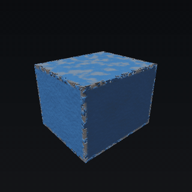<figcaption><b>Painted crate</b><span>Chipped paint, dissolving to nothing</span><code>Animate "dissolve"</code></figcaption></figure>
      <figure>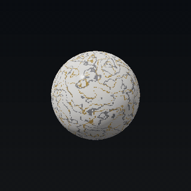<figcaption><b>Marble sphere</b><span>Polished stone with gold veins</span><code>Animate "dissolve"</code></figcaption></figure>
      <figure>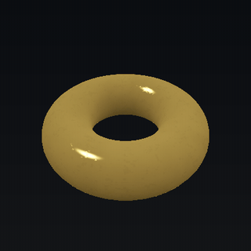<figcaption><b>Gold torus</b><span>See-through holes show the inside of the ring</span><code>Animate "dissolve"</code></figcaption></figure>
      <figure>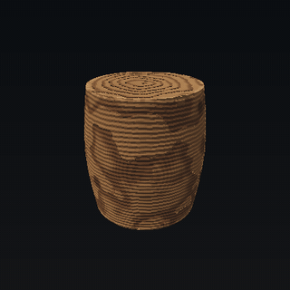<figcaption><b>Wood barrel</b><span>Tree rings, knots, worn varnish</span><code>Animate "dissolve"</code></figcaption></figure>
    </div>
  </section>

  <section>
    <h2>Frost spread: one effect, four surfaces</h2>
    <p>A front grows from a seed point in 3D and leaves crystalline frost behind (fine Voronoi facets, 85% cover so the material still reads through).</p>
    <div class="reel">
      <figure>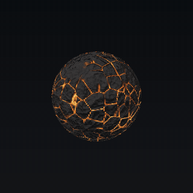<figcaption><b>Lava sphere</b><span>Ice over molten cracks</span><code>Animate "spread"</code></figcaption></figure>
      <figure>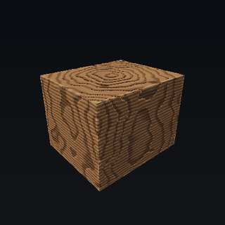<figcaption><b>Wood crate</b><span>Wraps over the edge from the top face</span><code>Animate "spread"</code></figcaption></figure>
      <figure>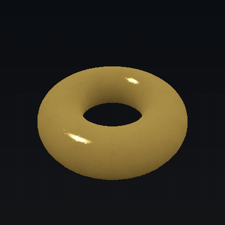<figcaption><b>Gold torus</b><span>Crosses the UV seam without a line</span><code>Animate "spread"</code></figcaption></figure>
      <figure>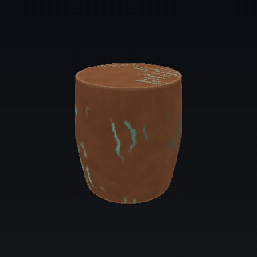<figcaption><b>Copper barrel</b><span>Patina and rain streaks under the ice</span><code>Animate "spread"</code></figcaption></figure>
    </div>
  </section>

  <section>
    <h2>Moving surfaces</h2>
    <p>Each frame is only arithmetic over buffers (about 1–6 ms for 128–256² in headless Luau).</p>
    <div class="reel">
      <figure>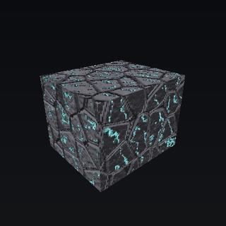<figcaption><b>Rune pulse</b><span>Glow travels up through carved channels</span><code>Animate "pulse"</code></figcaption></figure>
      <figure>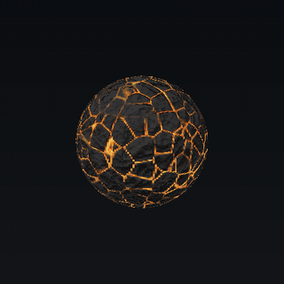<figcaption><b>Lava flow</b><span>A looping noise table scrolls along the cracks</span><code>Animate "flow"</code></figcaption></figure>
      <figure>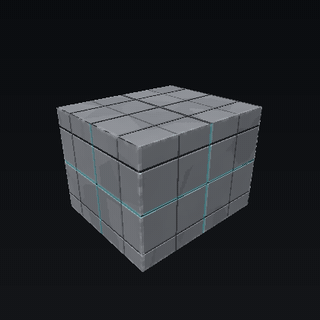<figcaption><b>Scan, sci-fi panels</b><span>A band sweeps the height</span><code>Animate "scan"</code></figcaption></figure>
      <figure>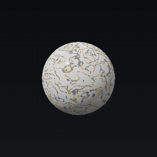<figcaption><b>Scan, marble</b><span>Same effect on a curved surface</span><code>Animate "scan"</code></figcaption></figure>
    </div>
  </section>

  <section>
    <h2>Reactive surfaces</h2>
    <p>They respond to hits, to each other and to motion. In the <a href="https://claude.ai/artifact/9UFYHvhTuSpexgDQmDRrEj" style="color:var(--accent)">surface bake lab</a>, tap the model to hit it.</p>
    <div class="reel">
      <figure>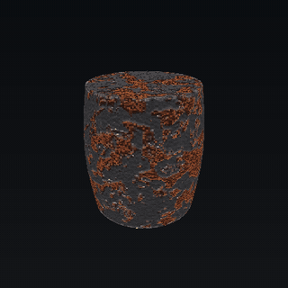<figcaption><b>Molten hits, iron</b><span>Heat builds where you keep hitting and cools; ripples run across the surface</span><code>React.hit · heat · ripple</code></figcaption></figure>
      <figure>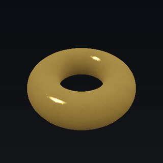<figcaption><b>Molten hits, gold</b><span>The same profile on another material</span><code>React.hit · heat</code></figcaption></figure>
      <figure>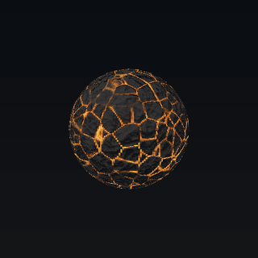<figcaption><b>Ice vs lava</b><span>Frost seeds freeze the flow; the flow's heat melts the frost back</span><code>React flow + frost</code></figcaption></figure>
      <figure>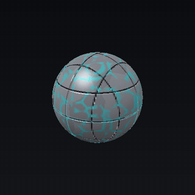<figcaption><b>Force field</b><span>Shimmer follows spin speed; hits ripple</span><code>React shimmer(spin) · ripple</code></figcaption></figure>
    </div>
  </section>

  <section>
    <h2>Depth without shaders</h2>
    <div class="reel">
      <figure>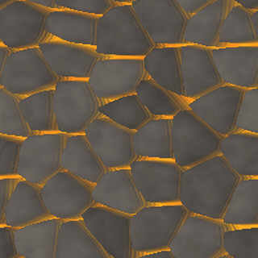<figcaption><b>Parallax occlusion</b><span>A flat square that looks deep (soft crack edges and bilinear fetch keep it flicker-free)</span><code>Parallax.pom</code></figcaption></figure>
      <figure>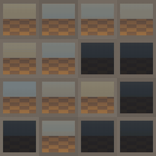<figcaption><b>Interior mapping</b><span>A room behind every window, one ray-box hit per texel</span><code>Parallax.interior</code></figcaption></figure>
      <figure>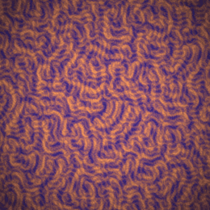<figcaption><b>Infinite zoom</b><span>Octave blend with a slight spiral; it never loops visibly</span><code>Parallax.zoom</code></figcaption></figure>
      <figure>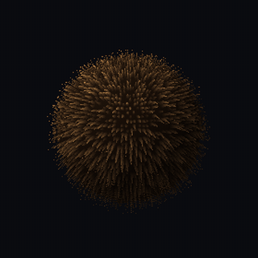<figcaption><b>Shell fur</b><span>The tips lag on a spring when the spin lurches</span><code>Parallax.shells · React.spring</code></figcaption></figure>
      <figure class="wide">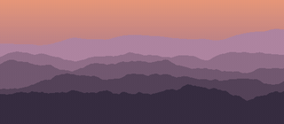<figcaption><b>Layered parallax</b><span>Five ranges with aerial perspective</span><code>Parallax.layers</code></figcaption></figure>
    </div>
  </section>
</main>
